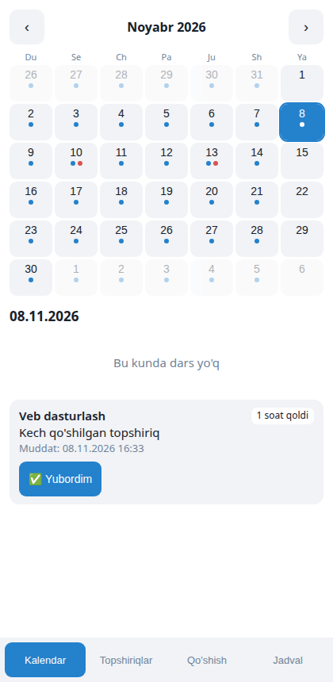
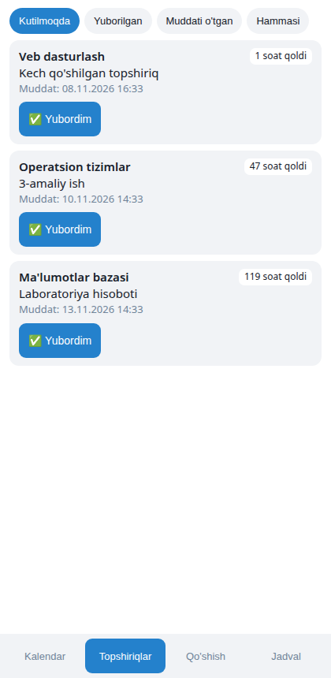
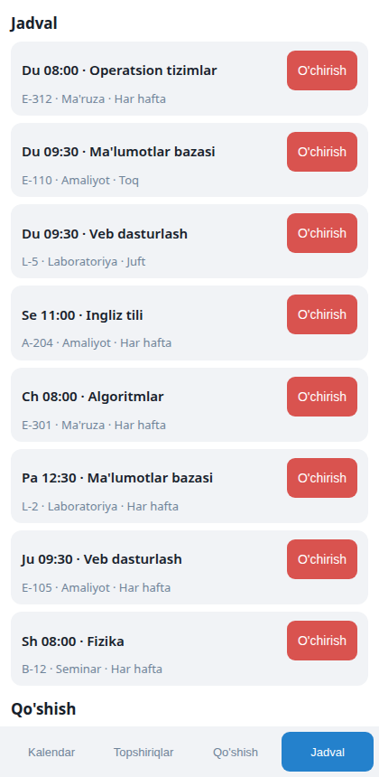

TATU talabalari uchun Telegram yordamchi
Muddat endi jimgina o‘tib ketmaydi
72soat qoldi
24soat qoldi
3soat qoldi
Muammo
LMS hamma narsani saqlaydi, lekin talabaga hech narsa yozmaydi
- Muddat sezilmay o‘tadiSaytga kirmagan talaba topshiriqni unutadi. Bitta amaliy ish 5–10 ball.
- Ertalab jadval qidiriladiHaftalik to‘rdan toq yoki juft haftani ajratib, xonani topish kerak.
- O‘zgarishlar yo‘qoladiXona almashgani va e’lonlar guruh chatlarida ko‘milib ketadi.
Har kuni ertalab
Bugungi darslar o‘zi keladi
Talaba vaqtni o‘zi tanlaydi. Xabarda faqat shu haftaga tegishli darslar va yaqin muddatlar bo‘ladi.
- O‘zbek va rus tillarida
- Dars yo‘q kuni bezovta qilmaydi
- Sukut soatlarini har kim o‘zi belgilaydi
📅 Dushanba, 9-noyabr · TOQ hafta
08:00 · E-312 · Operatsion tizimlar (Ma'ruza)
09:30 · E-110 · Ma'lumotlar bazasi (Amaliyot)
⏰ 2 ta topshiriq muddati yaqin → /deadlines07:00
📅 Bugun🗓 Hafta⏰ Deadline'lar
Eslatmalar
Faqat ishini hali yubormaganga eslatadi
72 soatBirinchi eslatma
“Yubordim”Talaba bitta tugmani bosdi
24 soatBu eslatma endi kelmaydi
3 soatBu ham kelmaydi
Topshiriq kech qo‘shilsa, uchta xabar birdan kelmaydi: bitta “muddat yaqin” xabari yetadi.
Telegram ichidagi ilova
Butun oy bitta ekranda



Guruh sardori
Bir marta kiritadi, butun guruh biladi
Sardor jadvalni bir xabarda yozadi. O‘zgarish yoki e’lon guruhning har bir a’zosiga shaxsan yetadi.
- Jadval, topshiriq, dars o‘zgarishi va e’lon bitta panelda
- Talaba topshiriq taklif qiladi, sardor tasdiqlaydi
- E’lon kimga yetgani haqida hisobot keladi
🛠 Sardor paneli · «315-24»
🗓 Jadval➕ Topshiriq
🔄 Jadval o'zgarishi📣 E'lon
🔄 10-noyabr: Operatsion tizimlar 09:30 ga, E-110 xonaga ko'chdiguruhga yuborildi
LMS bilan sinxronlash
Guruhdan bitta odam ulasa, hamma foyda ko‘radi
1 ko‘ngilliO‘z roziligi bilan ulaydi, parol so‘ralmaydi
→
Har 30 daqiqadaYangi topshiriq va jadval o‘zgarishi tekshiriladi
→
Butun guruhEslatma va o‘zgarish xabarlarini oladi
Hozirgi holat: LMS javoblarini taqlid qiluvchi sinov serverida ishlaydi. Haqiqiy LMS bilan ishga tushirish universitet roziligidan keyin. Sayt tuzilishi o‘zgarsa, bot ma’lumotga tegmasdan to‘xtaydi va adminni ogohlantiradi.
Ishonchlilik
Eslatma botida eng katta xato — xabar yetib bormasligi
445avtomatik test o‘tdi
86%kod test bilan qamrab olingan
5000talabaga mo‘ljallangan
2 tilo‘zbek va rus
- Server qayta ishga tushsa ham ertalabki xabar yo‘qolmaydi va ikki marta kelmaydi
- Ma’lumotlar shifrlangan holda zaxiralanadi, tiklash amalda sinab ko‘rilgan
Holat
Kod tayyor, navbat haqiqiy guruhlarda
Tayyor va sinovdan o‘tgan
- Bot: jadval, eslatma, e’lon
- Telegram ilovasi
- Sardor paneli va admin panel
- Monitoring va zaxira
Pilotdan oldin
- Server va domen
- Universitet roziligi
- Haqiqiy LMS bilan sinov
Keyingi bosqich
- 1 fakultetda 2 haftalik pilot
- Baho va davomat xabarlari
- Imtihon kalendari